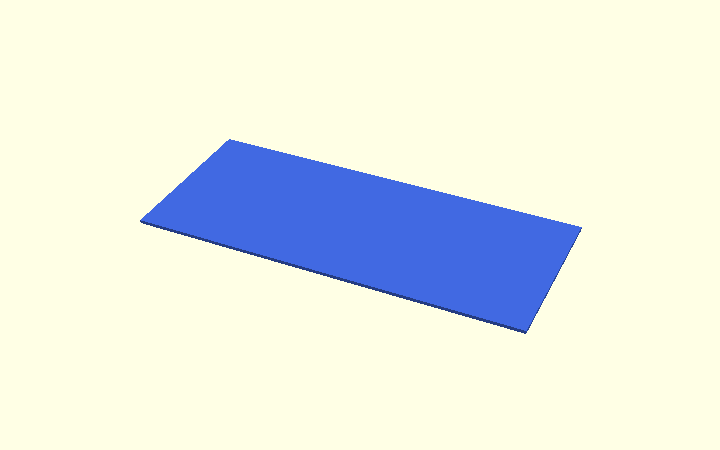

How hull() is used in the Corner Bracket
The simplified bracket uses hull() for two different jobs:
- the outside side chamfer: the hull describes material that may remain;
- the elephant-foot side relief: the hull describes material that must be removed.
For the shared vocabulary, start with OpenSCAD design concepts.
1. hull() on a simple convex bar




~~~openscad hull() { wide_layer(); narrow_layer(); } ~~~

For a convex shape, the transition is straightforward.
2. Outside side chamfer: hull as keep geometry
The real bracket is an L and therefore concave. A direct hull of the L would fill its open inside corner.
The production model instead hulls a temporary convex outside outline in outer_side_chamfer_keep_envelope().
The result is clipped with the real profile_body():
~~~openscad intersection() { profile_body(); outer_side_chamfer_keep_envelope(); } ~~~
Here the hull describes material we are allowed to keep.
3. Elephant-foot side relief: hull as cut geometry
The plywood-facing side relief is the opposite kind of problem.
Instead of separate cutters for the horizontal edge, rounded corner and vertical edge, inside_opening_2d() describes the whole open region once.
At the print face the opening is enlarged by elephant_foot_relief. One relief-depth inward it has its normal size.
hull() connects those two layers:
~~~openscad hull() { inside_side_relief_layer( side * (bracket_width / 2 - elephant_foot_relief) );
inside_side_relief_layer(
side * bracket_width / 2,
elephant_foot_relief
);
} ~~~
That hull is a cutting volume.
It follows the complete contact path continuously, including the rounded inside corner.
A separate hull is used on the opposite broad face only because the bracket can be printed on either side.
4. Why the arm-tip correction stays separate
The continuous opening hull follows the plywood-facing geometry correctly.
At an arm tip it meets the diagonal outside side chamfer. That is a local three-edge junction.
Only that tiny junction needs an extra correction.
The current correction is one triangular prism positioned with fixed translate(), rotate() and mirror() calls. It does not use multmatrix().
~~~text continuous side relief + small tip correction = complete print relief ~~~
The arm end-face bevel itself stays in the 2D profile.
5. Combined-hull experiment
design/combined_chamfer_hull.scad remains an experiment on a straight convex bar.


The experiment remains educational rather than production architecture.
Practical rule
| Feature | Role | Approach |
|---|---|---|
| arm-end chamfers | final 2D boundary | profile coordinates |
| large outside corner chamfer | final 2D boundary | profile coordinates |
| outside side-edge chamfer | keep geometry | hull() + clip |
| continuous elephant-foot side relief | cut geometry | opening-layer hull() |
| arm-tip transition | local cut | simple triangular prism |
| four M5 holes/countersinks | cut geometry | cylinders/cones + difference() |
The rounded inside corner itself is explained in the Polygon Guide.